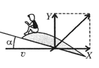
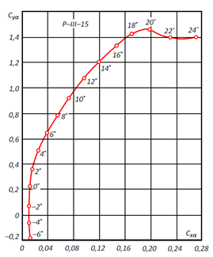
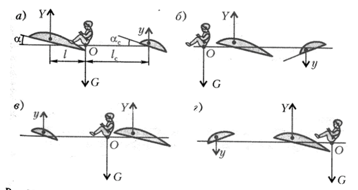

X20 (2020) — English translation
An aerodynamic force $F_А$ acts on a body uniformly moving in a medium (for example, an airplane wing in the air). From general considerations it is clear that the magnitude of this force depends on the speed of the medium relative to the body $v$, the density of the medium $\rho$ and the size of the body $L$. That is, $F_А=c\rho^p v^q L^r$, where $c$ is a certain coefficient.
The aerodynamic force $F_А$ is usually decomposed into two components: the lift force $Y=c_y \rho^p v^q L^r$ is directed perpendicular to the velocity vector, the drag force $X=c_x \rho^p v^q L^r$ is directed along the velocity vector (Fig. 1). Here we introduced dimensionless coefficients: $c_y$ – lift coefficient, $c_x$ – drag coefficient, which depend on the shape of the body and the direction of velocity relative to the body.

Coefficients $c_x$ and $c_y$ depend on the angle of attack - the angle between the wing plane and the direction of speed (Fig. 1). This dependence can be displayed on a parametric graph, where different points of the curve correspond to different angles of attack, and the axes are $c_x$ and $c_y$.

At the moment of a straight-line take-off run of an aircraft, its speed is directed horizontally, and a constant thrust force $F_Т$ acts on it.
Aircraft engine power $N$, aerodynamic quality $K=c_y/c_x$, fuel mass consumption $\mu$, free fall acceleration $g$, ratio of the final and initial mass of the aircraft $m_1/m_0$.
One wing is not enough for stable and controlled flight; another horizontal aerodynamic plane is used: a stabilizer. On a passenger plane, this is a small “wing” at the back. There are 4 basic aerodynamic designs that differ in the position (front/rear) and angle of attack of the stabilizer (Fig. 3). In Fig. Figure 3 shows the equilibrium positions during horizontal flight for various schemes.

Let us assume that the aircraft is moving high (the free path of the molecules is much greater than the size of the vehicle) and its speed of motion $v_1$ is much greater than the thermal speeds of the molecules. Let its wing be a plane with area $S$ and angle of attack $\alpha$. Angle of attack is the angle between the plane of the wing and the speed, which is horizontal.
One of the problems in creating an aerospace aircraft is protecting the device from overheating when descending in dense layers of the atmosphere. To solve the problem, ceramic thermal insulation materials with a thermal conductivity coefficient of $λ=0.01~Вт/(м\cdot К)$, density of $\rho=100~kg/м^3$, and specific heat capacity of $c=10^3~Дж/(kg\cdot К)$ are used. The characteristic time during which the device is in dense layers of the atmosphere $\tau=10^3~с$.
A rotating cylinder that moves with speed $\vec{v}$ in a liquid or gas with density $\rho$ is acted upon by a force $\vec{F}=2\pi R^2 L\rho[\vec\omega\times\vec{v}]$. Here $R$ is the radius of the cylinder, $L$ is the length of the cylinder, $\vec\omega$ is the angular velocity of rotation of the cylinder. The emergence of this force is called the Magnus effect. In this part of the problem, do not take into account the force of air resistance, and also assume that the angular velocity of rotation of the cylinder is constant.
Source: https://pho.rs/p/17